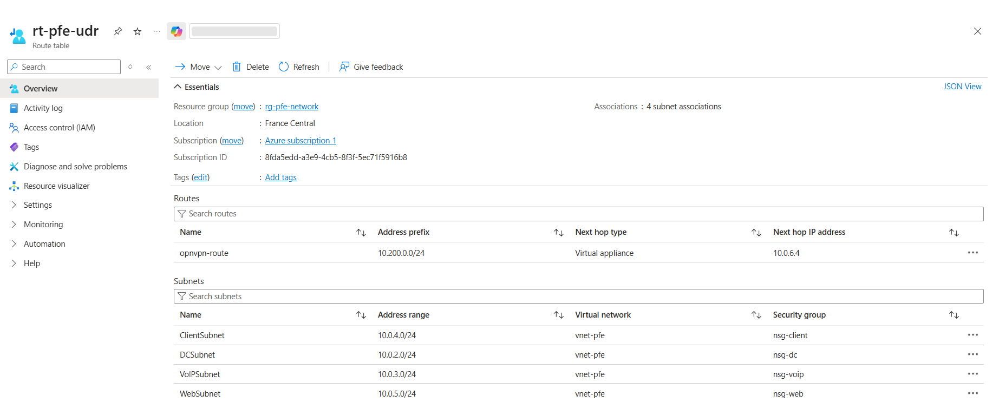
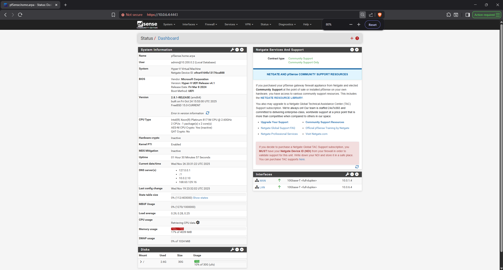
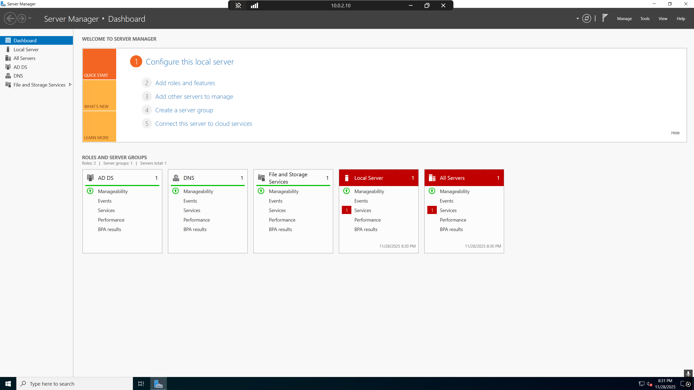
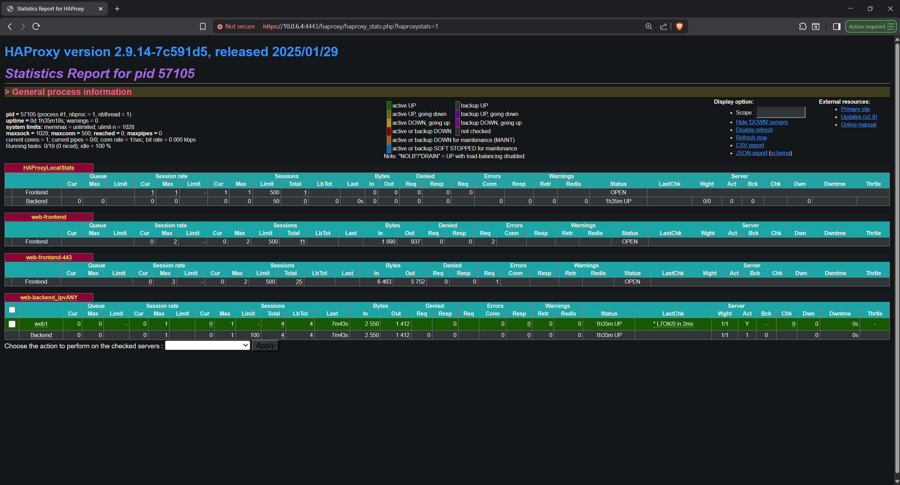
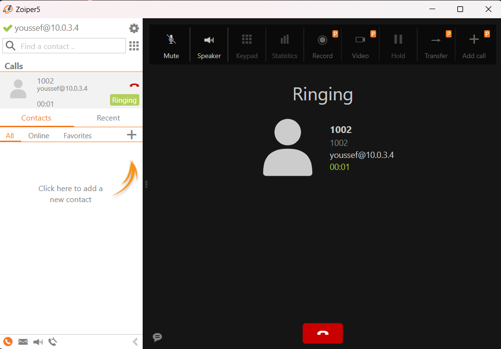
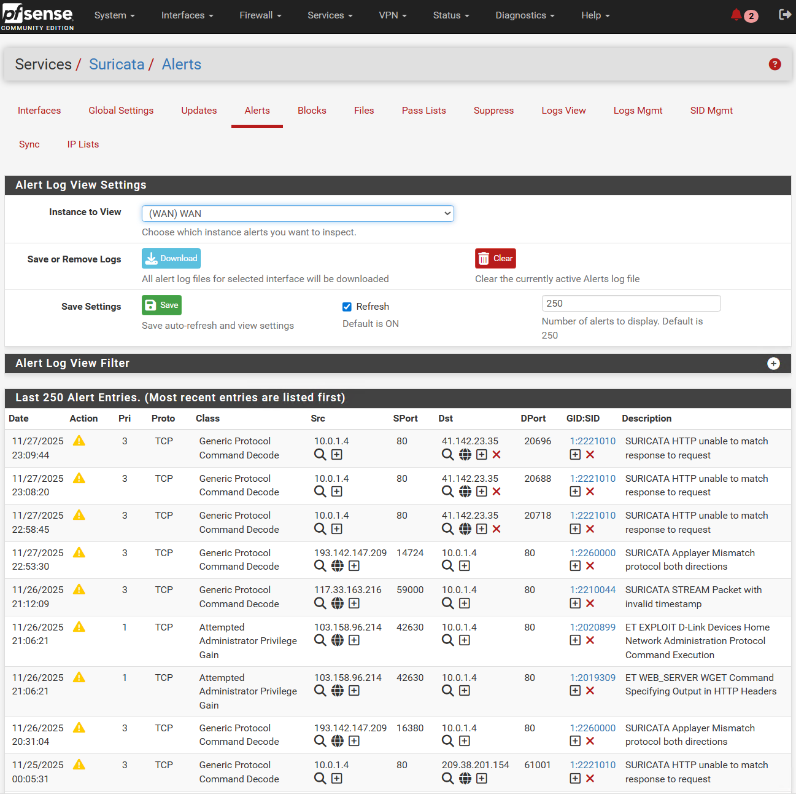
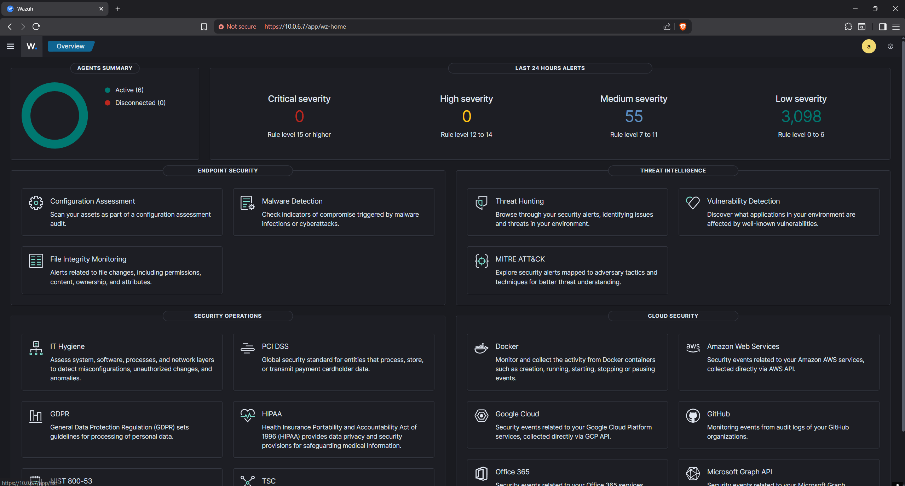

Secure Azure Cloud
Infrastructure
Designing and implementing a segmented, zero-trust Azure environment featuring centralized routing, IDS/IPS, and comprehensive SIEM monitoring.

1. Architecture & Segmentation
To eliminate the risks of a flat network, the architecture was designed using a Hub-and-Spoke model. The Virtual Network (VNet) is strictly segmented into dedicated subnets: AD/DNS, Web, Client, VoIP, and Management.
Using Azure User Defined Routes (UDRs), all intra-subnet and outbound traffic is forced through the central pfSense Network Virtual Appliance (NVA). This guarantees that no internal machine has direct, unmonitored access to the internet.

2. Centralized Gateway & VPN
The pfSense Firewall acts as the absolute core of the security perimeter. It handles strict LAN/WAN filtering, Network Address Translation (NAT), and secure remote administration.
To access the Management subnet without exposing critical interfaces to the public internet, a highly secure OpenVPN tunnel was deployed, utilizing a local Certificate Authority (CA) for robust cryptographic authentication.

3. Identity, DNS & Web Proxy
A Windows Server runs Active Directory (AD DS) to centralize identity and access management, while handling local DNS resolution.
For external services, an internal Nginx web server is securely published using HAProxy. Operating as a reverse proxy on the pfSense gateway, HAProxy handles SSL-offloading and obfuscates the internal network topology from external users.


4. VoIP Implementation
An Asterisk IP-PBX server was deployed to handle internal communications via SIP protocols. Specific outbound NAT rules were configured on the firewall to prevent aggressive port-rewriting, ensuring stable, bidirectional RTP audio streams for clients (Zoiper).

5. IDS/IPS, Monitoring & SIEM
To defend the perimeter, Suricata (IDS/IPS) actively analyzes network flows to detect and block malicious signatures, such as Nmap port scans.
Visibility is maintained using Zabbix for real-time hardware and service monitoring, while Wazuh (SIEM/HIDS) aggregates system logs to detect anomalies, analyze vulnerabilities, and provide a comprehensive Security Operations Center (SOC) dashboard.

